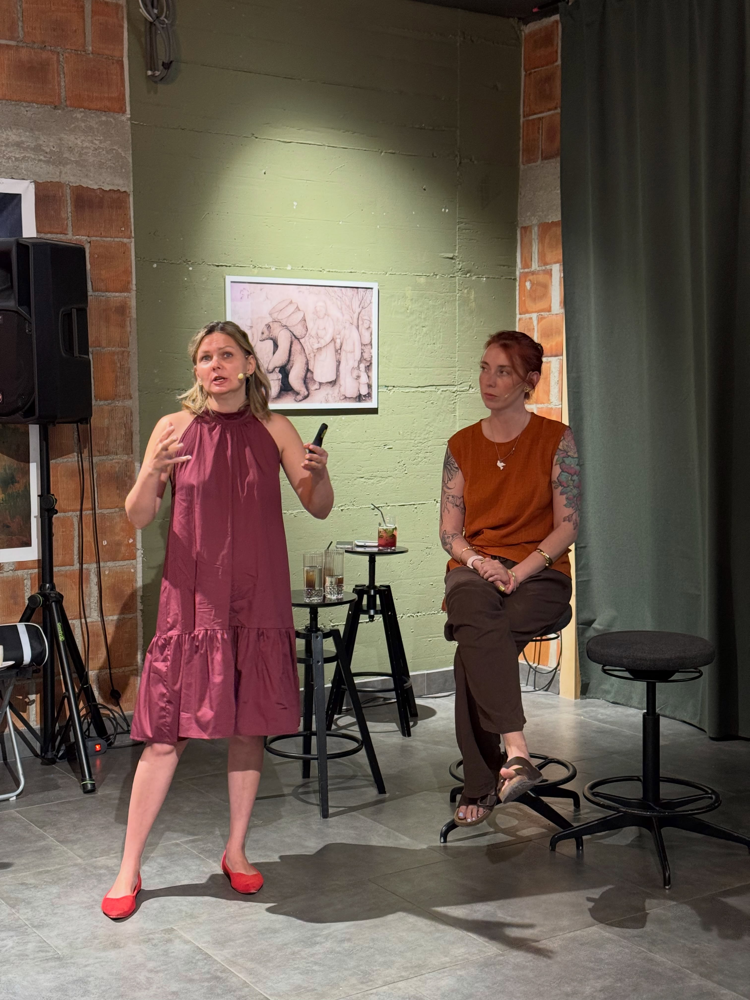

Нейробиология и КПТ:
Научный подход к женскому выгоранию,
тревоге и СДВГ.
Помогаем женщинам с СДВГ, тревогой и выгоранием вернуть контроль над жизнью. Бережно, научно и на собственном опыте.

Знакомо ли вам?
Тревога как норма жизни.
Вы привыкли к тахикардии, ожиданию худшего и мыслям, которые невозможно выключить. Выживание заменило вам жизнь.
Иллюзия «я не справляюсь».
Ощущение, что вы плохая мать, плохая жена и «не такой» человек. Хаос в голове и постоянные попытки быть «удобной».
Выгорание и бессилие.
Когда простые вещи отнимают все силы. Когда хочется, чтобы все просто оставили вас в покое, а сил нет даже на отдых.
Кто мы

Вырезанное фото из анонса лекции
Юлия Гарипова
КПТ-терапевт
У меня СДВГ. У моей дочери — РАС. Я прошла через послеродовую депрессию и панические атаки. Я знаю эти состояния не только по учебникам. Моя задача — стать для вас той самой спокойной опорой, чтобы вы поняли: жизнь может быть другой.
Дарья Плахина
Биолог, преподаватель (14 лет стажа)
Развеиваю антинаучный бред и мифы с помощью доказательной медицины. Говорю о сложных вещах — от нейромедиаторов и сна до либидо и работы гормонов — так, чтобы вы наконец поняли собственное тело. Никакой эзотерики, только суровые научные факты, которые делают жизнь проще.
Терапия — это не волшебная пилюля за 45 минут. Это труд. Но однажды вы заметите, что можете просто сидеть и пить кофе. Не прислушиваясь к сердцу. Не ожидая беды.
Наш подход
Диагностика без ярлыков:
Разбираем, где заканчивается усталость и начинается СДВГ или выгорание.
Нейробиология стресса:
Понимаем, что физически происходит в мозге при тревоге.
Инструменты КПТ:
Практики, которые возвращают фокус и снижают панику в моменте.
Точка опоры:
Учимся жить со своими особенностями, не пытаясь переделать себя под ожидания общества.
Почему нам можно доверять?
Мы знаем эти состояния не только по учебникам.
«Я столкнулась с послеродовой депрессией. Я тонула в бездне и не могла позвать на помощь, потому что не понимала, что со мной происходит. Я знаю, как это — жить в тревожном расстройстве, когда постоянное внутреннее напряжение становится нормой, а тахикардия кажется привычной. Моя дочь — нейроотличная (РАС), и я знаю, как тяжело бывает мамам таких детей.
Мы создали этот проект, чтобы дать вам то, чего когда-то не было у нас: безопасное пространство, научные знания о вашем мозге и бережные инструменты для возвращения к себе.»
Как проходит обучение
Мы продумали каждый шаг, чтобы вам было комфортно
Закрытый Telegram-канал
Уютное и безопасное пространство для общения, материалов и поддержки.
Научный подход без воды
Короткие и емкие уроки, основанные на нейробиологии и КПТ. Только доказательная медицина.
Ответы на вопросы
Мы всегда на связи, чтобы разобрать ваши ситуации и помочь адаптировать знания к жизни.
Наши программы
Выберите подходящий для вас формат участия.
«Кажется, у меня СДВГ»
Всё, что нужно знать о СДВГ у взрослых женщин.
- Доступ к записи лекции
- Конспект с главными мыслями
- Практические техники
«Выгорание и тревога»
Глубокая проработка состояний с точки зрения КПТ и нейробиологии.
- Серия подробных лекций
- Рабочие тетради к урокам
- Доступ навсегда
Закрытый Telegram-клуб
Поддерживающее комьюнити и регулярные ответы на вопросы.
- Еженедельные прямые эфиры
- Разбор ваших кейсов
- Общение с единомышленниками
Что говорят наши ученицы
«Это первый курс, который я досмотрела до конца! Никакой эзотерики и обвинений в стиле "ты просто мало стараешься". Даша и Юля буквально разложили мой мозг по полочкам. Я поняла, почему я срываюсь, и наконец-то смогла просто отдохнуть без чувства вины.»
Анна
«Объяснения Даши про нейромедиаторы — это просто отвал всего! Я думала, что со мной что-то не так, а оказалось, это просто химия мозга и выгорание. А практики КПТ от Юли помогают мне справляться с тахикардией прямо на работе.»
Екатерина
«Закрытый клуб — это моя отдушина. Очень поддерживающее комьюнити. Девочки делятся своими историями, и ты понимаешь, что ты не одна такая. Эфиры каждую неделю очень терапевтичные, Юля отвечает на все вопросы с такой теплотой.»
Ольга
Частые вопросы
Будет ли запись лекций?
Да, все лекции доступны в записи, вы сможете пересматривать их в удобное время и возвращаться к материалам, когда это необходимо.
Подойдет ли мне, если у меня нет диагноза?
Конечно. Мы разбираем механизмы выгорания и тревоги, которые свойственны большинству современных женщин. Вам не нужен официальный диагноз, чтобы улучшить свое качество жизни.
Как оплатить не из РФ?
Мы принимаем оплаты со всего мира через платформу Tribute. Вы сможете безопасно оплатить доступ любой иностранной картой.
Ищете личную или семейную терапию?
Юлия Гарипова берет клиентов в индивидуальную работу.
Написать Юлии в Telegram